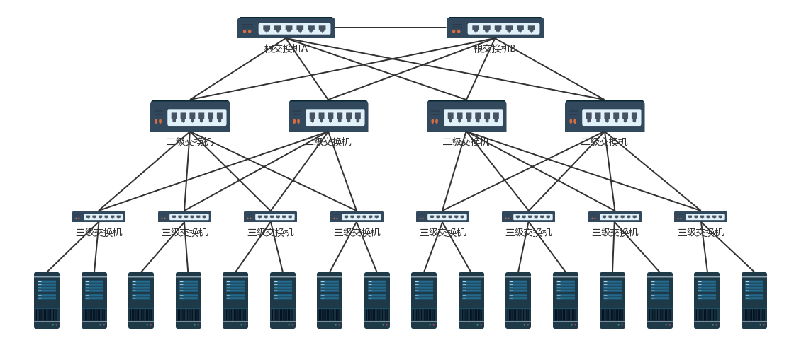

底层网络知识详解1
物理层、MAC 层
- ARP协议 ：已知 IP 地址，求 MAC 地址
- MAC（媒体接入控制） 层是用来解决多路访问的堵车问题的
- ARP 是通过吼的方式来寻找目标 MAC 地址的，吼完之后记住一段时间，这个叫作缓存
- 交换机是有 MAC 地址学习能力的，学完了它就知道谁在哪儿了，不用广播了
拓扑结构
交换机环路问题引起共享道路被广播包堵塞
- 通过 STP 协议破坏环路，生成树结构

Root Bridge，也就是根交换机。
Designated Bridges，有的翻译为指定交换机。（相当于树干，而主机为叶子）
Bridge Protocol Data Units （BPDU） ，网桥协议数据单元。（根交换机才能发送）
Priority Vector，优先级向量。（值越小优先级越高）
- 交换机数目多会面临隔离问题，通过 VLAN 虚拟局域网，解决广播问题和安全问题
ICMP（互联网控制报文协议）
ICMP 类似侦察兵
ping 是基于 ICMP 工作的，而 ICMP 是封装在 IP 包里。
- ping 是查询报文类型，是一种主动请求，并且获得主动应答的 ICMP 协议
- traceroute 差错报文类型是一种异常报文，终点不可达为 3，源抑制为 4，超时为 11，重定向为 5。IP，ICMP 的前 8 字节不变，后面则跟上出错的那个IP 包的 IP 头和 IP 正文的前 8 个字节。
通过 tcpdump -i eth0 icmp ，查看包有没有到达某个点，回复的包到达了哪个点，可以更加容易推断出错的位置。
traceroute 的一个作用是故意设置特殊的 TTL，来追踪去往目的地时沿途经过的路由器。另一个作用是故意设置不分片，从而确定路径的 MTU。
网关
网关往往是一个路由器，是一个三层转发的设备。处理 MAC 头和 IP 头，网关是路由器的一个网口
静态路由：是在路由器上，配置一条一条规则。下一跳 IP 规则
MAC 地址只要过网关，就必定会改变，因为已经换了局域网。两者主要的区别在于 IP 地址是否改变。不改变 IP 地址的的网关，我们称为转发网关；改变 IP 地址的网关，我们称为 NAT 网关
路由表
一张路由表中会有多条路由规则，但每条路由规则至少包含：
- 目的网络
- 出口设备
- 下一跳网关
通过 route 命令和 ip route 命令都可以进行查询或配置
动态路由
距离矢量路由算法
思路：每个路由器都保存一个路由表，包含多行，每行对应网络中的一个路由表，包含多行，每行对应网络中的一个路由器，每一行包含两部分信息，一个是要到目标路由器，从那条线出去，另一个是到目标路由器的距离。
缺点：维护更新路由表不及时，涉及全局，开销大，不适合网络规模大的情况。
链路状态路由算法
思路：路由器启动后，将计算自己和邻居之间的链路状态包广播出去，发送到整个网络的每个路由器 ；这样每个路由器都能在自己本地构建一个完整的图，根据这个图使用 Dijkstra 算法计算出两点最短距离。
优点：发送信息变小，节省带宽和 cpu 利用率；可以及时更新路由器状态
缺点：每个路由器需要有较大的存储空间，
基于距离矢量路由算法产生 BGP 协议一般用于国家之间
基于链路状态路由算法产生 OSPF 协议广泛运用于数据中心，简称内部网关协议（IGP）